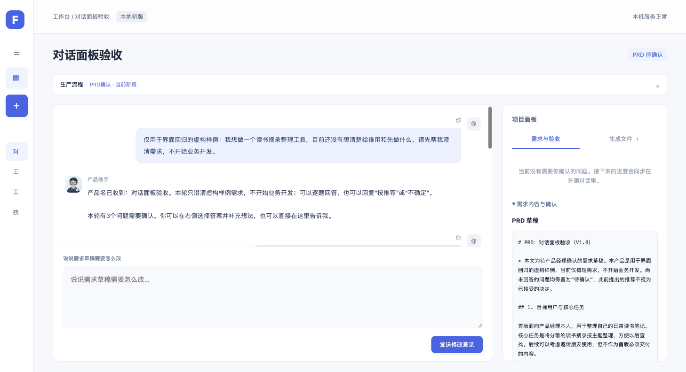

你的问题和反馈，一直在。
支持点选答案或直接补充想法，已提交的内容与关键确认都会保存。
从想法到交付
助手同步进度，你来确认关键决定。
从一句想法或已有需求文档开始。
逐项补全问题，保留你的回答。
确认实现方案，再拆分开发任务。
按任务执行，分批保存代码版本。
检查支持的工程，打开本机页面验收。
审阅成果、下载源码、确认采用。
目前支持本机单人使用；运行检查面向 Python / FastAPI 工程。云部署、多人协作仍未接入。
实际界面
下面是本机工作台的真实截图，内容使用虚构验收样例。

支持点选答案或直接补充想法，已提交的内容与关键确认都会保存。
顶部流程与左侧项目栏自动伸缩。任务暂停后，已保存成果仍可继续。
在生成文件标签查看名称、预览、下载和本机保存路径。
包含后端、网页、测试、规则和必要手册，不包含个人数据。
macOS 安装依赖后，双击根目录 start.command 启动。
访问 http://127.0.0.1:8124，新建自己的产品。